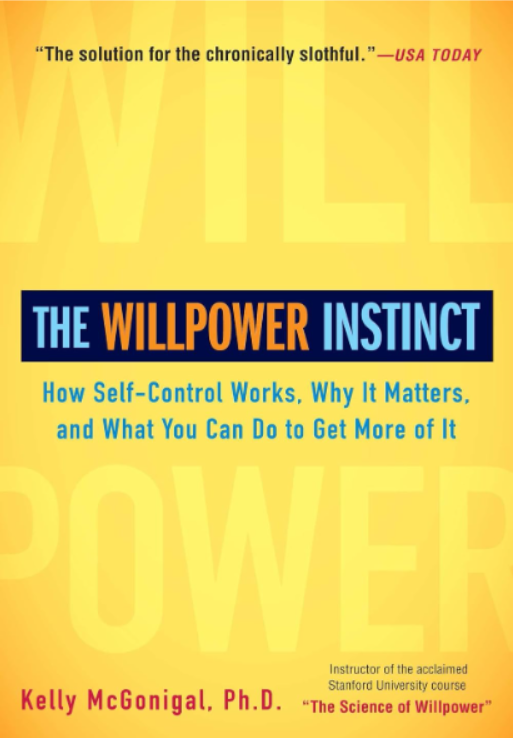

I picked up a bunch of new habits in the past couple months since reading this. Positive habits are self-perpetuating. So are negative ones.
My Notes #
Willpower comes in 3 flavors:
I will Something you want to do more of or start doing. Upper left side of the prefrontal cortex helps you start and stick to boring, difficult, or stressful tasks.
I won’t Something you want to stop doing. The right side of the prefrontal cortex holds you back from following every impulse or craving.
I want Long term goal to focus on. Goals and desires.
We have one brain but two minds: #
The version of us that acts on impulse and seeks immediate gratification.
The version of us that controls our impulses and delays gratification to protect our long-term goals.
They’re both us, but we switch back and forth between these two selves.
When these two selves disagree, one version of us has to override the other. The part of you that wants to give in isn’t bad—it simply has a different point of view about what matters most.
When your mind is preoccupied, your impulses—not your long-term goals—will guide your choices.
To have more self-control, you first need to develop more self-awareness.
Try to analyze when decisions were made that either supported or undermined your goals. Trying to keep track of your choices will also reduce the number of decisions you make while distracted. Watch how the process of giving in to your impulses happens. You don’t even need to set a goal to improve your self-control yet. See if you can catch yourself earlier and earlier in the process, noticing what thoughts, feelings, and situations are most likely to prompt the impulse.
What do you think or say to yourself that makes it more likely that you will give in? Meditation helps with a wide range of self-control skills, including attention, focus, stress management, impulse control, and self-awareness. Also more gray matter and bloodflow in the prefrontal cortex, as well as regions of the brain that support self-awareness.
Describe your two competing selves. What does the impulsive version of you want? What does the wiser version of you want?
Track your willpower choices. For at least one day, try to notice every decision you make related to your willpower challenge.
We’re used to seeing temptation and trouble outside of ourselves: the dangerous doughnut, the sinful cigarette, the enticing Internet. But self-control points the mirror back at ourselves, and our inner worlds of thoughts, desires, emotions, and impulses.
Identify the inner impulse that needs to be restrained. What is the thought or feeling that makes you want to do whatever it is you don’t want to do?
If you aren’t sure, try some field observation. Next time you’re tempted, turn your attention inward. Studies also show that people with higher heart rate variability are better at ignoring distractions, delaying gratification, and dealing with stressful situations. They are also less likely to give up on difficult tasks, even when they initially fail or receive critical feedback.
Slowing the breath (5 seconds in 10 seconds out) down activates the prefrontal cortex and increases heart rate variability, which helps shift the brain and body from a state of stress to self-control mode. A few minutes of this technique will make you feel calm, in control, and capable of handling cravings or challenges.
If you know you could use more sleep but you find yourself staying up late anyway, consider what you are saying “yes” to instead of sleep. This same willpower rule applies to any task you are avoiding or putting off—when you can’t find the will, you might need to find the won’t.
To preserve both your health and happiness, you need to give up the pursuit of willpower perfection. Even as you strengthen your self-control, you cannot control everything you think, feel, say, and do. You will have to choose your willpower battles wisely.
One of the best ways to recover from stress and the daily self-control demands of your life is relaxation. Relaxing—even for just a few minutes—increases heart rate variability by activating the parasympathetic nervous system and quieting the sympathetic nervous system.
It also shifts the body into a state of repair and healing, enhancing your immune function and lowering stress hormones.
Lie down on your back, and slightly elevate your legs. Close your eyes and take a few deep breaths, allowing your belly to rise and fall. If you feel any tension in your body, you can intentionally squeeze or contract that muscle, then let go of the effort. Stay here for five to ten minutes, enjoying the fact that there is nothing to do but breathe.
Stress—whether physical or psychological—is the enemy of self-control.
Every act of willpower is drawing from the same source of strength, leaving people weaker with each successful act of self-control.
Self-control is like a muscle. When used, it gets tired. If you don’t rest the muscle, you can run out of strength entirely.
Not every willpower failure reveals our innate inadequacies; sometimes they point to how hard we’ve been working.
The muscle model of willpower predicts that self-control drains throughout the day.
Pay attention to when you have the most willpower, and when you are most likely to give in. You can use this self-knowledge to plan your schedule wisely, and limit temptations when you know you’ll be the most depleted.
Make sure that your body is well-fueled with food that gives you lasting energy. Challenge the self-control muscle by asking people to control one small thing that they aren’t used to controlling.
The important “muscle” action being trained in all these studies isn’t the specific willpower challenge of meeting deadlines, using your left hand to open doors, or keeping the F-word to yourself. It’s the habit of noticing what you are about to do, and choosing to do the more difficult thing instead of the easiest.
Strengthen “I Won’t” Power: Commit to not swearing (or refraining from any habit of speech), not crossing your legs when you sit, or using your nondominant hand for a daily task like eating or opening doors.
Strengthen “I Will” Power: Commit to doing something every day (not something you already do) just for the practice of building a habit and not making excuses. It could be calling your mother, meditating for five minutes, or finding one thing in your house that needs to be thrown out or recycled.
Strengthen Self-Monitoring: Formally keep track of something you don’t usually pay close attention to. This could be your spending, what you eat, or how much time you spend online or watching TV.
The Quantified Self movement (www.quantifiedself.com) has turned self-tracking into an art and science.
Leaving candy out in a visible place can increase people’s general self-control (if they routinely resist the temptation).
Fatigue should no longer be considered a physical event but rather a sensation or emotion.
Just as the brain may tell the body’s muscles to slow down when it fears physical exhaustion, the brain may put the brakes on its own energy-expensive exercise of the prefrontal cortex. This doesn’t mean we’re out of willpower; we just need to muster up the motivation to use it.
All too often, we use the first feeling of fatigue as a reason to skip exercise, snap at our spouses, procrastinate a little longer, or order a pizza instead of cooking a healthy meal. To be sure, the demands of life really do drain our willpower, and perfect self-control is a fool’s quest.
But you may have more willpower than the first impulse to give in would suggest. The next time you find yourself “too tired” to exert self-control, challenge yourself to go beyond that first feeling of fatigue. (Keep in mind that it’s also possible to overtrain—and if you find yourself constantly feeling drained, you may need to consider whether you have been running yourself to real exhaustion.)
The mere promise that practice would improve performance on a difficult task helped the students push past willpower exhaustion.
If you think that not smoking is going to be as hard one year from now as it is that first day of nicotine withdrawal, when you would claw your own eyes out for a cigarette, you’re much more likely to give up. But if you can imagine a time when saying no will be second nature, you’ll be more willing to stick out the temporary misery.
When your willpower is running low, find renewed strength by tapping into your want power. For your biggest willpower challenge, consider the following motivations:
How will you benefit from succeeding at this challenge? What is the payoff for you personally? Greater health, happiness, freedom, financial security, or success?
Who else will benefit if you succeed at this challenge? Surely there are others who depend on you and are affected by your choices. How does your behavior influence your family, friends, coworkers, employees or employer, and community? How would your success help them?
Imagine to do what is difficult now. Can you imagine what your life will be like, and how you will feel about yourself, as you make progress on this challenge? Is some discomfort now worth it if you know it is only a temporary part of your progress?
Sometimes our strongest motivation is not what we think it is, or think it should be. If you’re trying to change a behavior to please someone else or be the right kind of person, see if there is another “want” that holds more power for you.
If we want to strengthen self-control, we may need to think about how we can best support the most exhausted version of ourselves—and not count on an ideal version of ourselves to show up and save the day.
Like a muscle, our willpower follows the rule of “Use it or lose it.” If we try to save our energy by becoming willpower coach potatoes, we will lose the strength we have.
If we try to run a willpower marathon every day, we set ourselves up for total collapse.
Train like an intelligent athlete, pushing our limits but also pacing ourselves. And while we can find strength in our motivation when we feel weak, we can also look for ways to help our tired selves make good choices.
Self-control is like a muscle. It gets tired from use, but regular exercise makes it stronger.
Keep track of when you have the most willpower, and when you are most likely to give in or give up.
Is your exhaustion real? The next time you find yourself “too tired” to exert self-control, examine whether you can go beyond that first feeling of fatigue to take one more step.
The willpower diet. Make sure that your body is well fueled with food that gives you lasting energy.
A willpower workout. Exercise your self-control muscle by picking one thing to do or keeping track of something you aren’t used to paying close attention to.
Find your biggest want power—the motivation that gives you strength when you feel weak—bring it to mind whenever you find yourself most tempted to give in or give up.
Moral licensing. #
When you do something good, you feel good about yourself. This means you’re more likely to trust your impulses—which often means giving yourself permission to do something bad.
Moral licensing doesn’t just give us permission to do something bad; it also lets us off the hook when we’re asked to do something good.
Whenever we have conflicting desires, being good gives us permission to be a little bit bad.
When you tell yourself that exercising, saving money, or giving up smoking is the right thing to do—not something that will help you meet your goals—you’re less likely to do it consistently.
When we think about our willpower challenges in moral terms, we get lost in self-judgments and lose sight of how those challenges will help us get what we want.
Do you use your “good” behavior to give yourself permission to do something “bad”?
Is this a harmless reward, or is it sabotaging your larger willpower goals?
Making progress on a goal motivates people to engage in goal-sabotaging behavior.
When you make progress toward your long-term goal, your brain—with its mental checklist of many goals—turns off the mental processes that were driving you to pursue your long-term goal. It will then turn its attention to the goal that has not yet been satisfied—the voice of self-indulgence.
Psychologists call this goal liberation. The goal you’ve been suppressing with your self-control is going to become stronger, and any temptation will become more tempting.
Focusing on progress can hold us back from success. That’s not to say that progress itself is a problem. The problem with progress is how it makes us feel—and even then, it’s only a problem if we listen to the feeling instead of sticking to our goals. Progress can be motivating, and even inspire future self-control, but only if you view your actions as evidence that you are committed to your goal.
You need to look at what you have done and conclude that you must really care about your goal, so much so that you want to do even more to reach it. This perspective is easy to adopt; it’s just not our usual mind-set. More typically, we look for the reason to stop.
The next time you find yourself using past good behavior to justify indulging, pause and remember the why.
Sometimes the mind gets so excited about the opportunity to act on a goal, it mistakes that opportunity with the satisfaction of having actually accomplished the goal.
We wrongly but persistently expect to make different decisions tomorrow than we do today.
As you go about making decisions related to your willpower challenge, notice if the promise of future good behavior comes up in your thinking. Do you tell yourself you will make up for today’s behavior tomorrow?
What effect does this have on your self-control today?
Do you actually do what you said you would, or does the cycle of “indulge today, change tomorrow” begin again?
We wrongly predict we will have much more free time in the future than we do today.
Aim to reduce the variability of your behavior day to day. View every choice you make as a commitment to all future choices.
So instead of asking, “Do I want to eat this candy bar now?” ask yourself, “Do I want the consequences of eating a candy bar every afternoon for the next year?” Or if you’ve been putting something off that you know you should do, instead of asking “Would I rather do this today or tomorrow?” ask yourself, “Do I really want the consequences of always putting this off?”
Using a daily rule also helps you see through the illusion that what you do tomorrow will be totally different from what you do today.
Is there a rule you can live with that will help you end the kind of inner debate that talks you right out of your goals?
The halo effect #
When we want permission to indulge, we’ll take any hint of virtue as a justification to give in.
Do you give yourself permission to indulge in something by focusing on its most virtuous quality? Do you have any magic words that give you permission to indulge, like “Buy 1 Get 1 Free,” “All Natural,” “Light,” “Fair Trade,” “Organic,” or “For a Good Cause”? This week, see if you can catch yourself in the act of handing out a halo to something that undermines your goals.
When a halo effect is getting in the way of your willpower challenge, look for a the most concrete measure (e.g., calories, cost, time spent or wasted) of whether a choice is consistent with your goals.
When you think about your willpower challenge, which part of you feels more like the “real” you—the part of you who wants to pursue the goal, or the part of you who needs to be controlled? Do you identify more with your impulses and desires, or with your long-term goals and values? When you think about your willpower challenge, do you feel like the kind of person who can succeed—or do you feel like you need to fundamentally suppress, improve, or change who you are?
The Idea: When we turn willpower challenges into measures of moral worth, being good gives us permission to be bad. For better self-control, forget virtue, and focus on goals and values. Under the Microscope • Virtue and vice. Do you tell yourself you’ve been “good” when you succeed at a willpower challenge, then give yourself permission to do something “bad”?• Are you borrowing credit from tomorrow? Do you tell yourself you will make up for today’s behavior tomorrow—and if so, do you follow through?• Halo effects. Do you justify a vice because of one virtuous aspect (e.g., discount savings, fat-free, protects the environment)?• Who do you think you are? When you think about your willpower challenge, which part of you feels like the “real” you—the part of you who wants to pursue the goal, or the part of you who needs to be controlled? Willpower Experiments • To revoke your license, remember the why. The next time you find yourself using past good behavior to justify indulging, pause and think about why you were “good,” not whether you deserve a reward.• A tomorrow just like today. For your willpower challenge, aim to reduce the variability of your behavior day to day.
n the last few years, neuroscientists have given the effect of dopamine release many names, including seeking, wanting, craving, and desire. But one thing is clear: It is not the experience of liking, satisfaction, pleasure, or actual reward. Studies show that you can annihilate the entire dopamine system in a rat’s brain, and it will still get a goofy grin on its face if you feed it sugar. What it won’t do is work for the treat. It likes the sugar; it just doesn’t want it before it has it.
Anything we think is going to make us feel good will trigger the reward system—the sight of tempting food, the smell of coffee brewing, the 50-percent-off sign in a store window, a smile from a sexy stranger, the infomercial that promises to make you rich. The flood of dopamine marks this new object of desire as critical to your survival. When dopamine hijacks your attention, the mind becomes fixated on obtaining or repeating whatever triggered it. This is nature’s trick to make sure you don’t starve because you can’t be bothered to pick a berry, and that you don’t hasten human extinction because seducing a potential mate seems like too much of a hassle. Evolution doesn’t give a damn about happiness itself, but will use the promise of happiness to keep us struggling to stay alive. And so the promise of happiness—not the direct experience of happiness—is the brain’s strategy to keep you hunting, gathering, working, and wooing.
Do you know what your own dopamine triggers are? Food? Alcohol? Shopping? Facebook? Something else? This week, pay attention to what captures your attention. What unleashes that promise of reward that compels you to seek satisfaction? What gets you salivating like Pavlov’s dogs or obsessed like Olds and Milner’s rats?
When dopamine is released by one promise of reward, it also makes you more susceptible to any other kind of temptation.
High levels of dopamine amplify the lure of immediate gratification, while making you less concerned about long-term consequences.
Look for how retailers and marketers try to trigger the promise of reward. Make it a game when you go to the grocery store or watch advertisements. What do you smell? What do you see? What do you hear? Knowing that cues have been carefully chosen to tempt you can help you see them for what they are and resist them.
Since it’s unlikely we’ll ever outlaw the promise of reward, we might as well put it to good use. We can take a lesson from neuromarketers and try to “dopaminize” our least favorite tasks. An unpleasant chore can be made more appealing by introducing a reward. And when the rewards of our actions are far off in the future, we can try to squeeze a little extra dopamine out of neurons by fantasizing about the eventual payoff (not unlike those lotto commercials).
My students have dopaminized tasks they typically put off by using music, fashion magazines, and television to help them work out; bringing dreaded paperwork to a favorite café and finishing it over hot chocolate; and, in a truly creative gesture, buying a bunch of scratch-off lottery tickets and placing them next to procrastinated projects around the house. Others visualize the best-possible outcome of their hard work, to make the faraway rewards seem more real. If there’s something you’ve been putting off because it’s so unpleasant, can you motivate yourself by linking it to something that gets your dopamine neurons firing?
promise of reward can be as stressful as it is delightful. Desire doesn’t always make us feel good—sometimes it makes us feel downright rotten. That’s because dopamine’s primary function is to make us pursue happiness, not to make us happy. It doesn’t mind putting a little pressure on us—even if that means making us unhappy in the process.
Most of us pay far more attention to the promise of feeling good than the actual feeling bad that accompanies dopamine-drive desire. This week, see if you can notice when wanting triggers stress and anxiety. If you give in to temptation, do you feel like you are responding to the promise of reward? Or are you trying to relieve the anxiety?
We watch ourselves buy the one thousandth candy bar, the new kitchen gadget, the next drink; we wear ourselves out chasing the new partner, the better job, the highest stock return. We mistake the experience of wanting for a guarantee of happiness.
When we free ourselves from the false promise of reward, we often find that the thing we were seeking happiness from was the main source of our misery.
Test the promise of reward with a temptation that you regularly indulge in because your brain tells you it will make you happy. The most common choices in my class are snack foods, shopping, television, and online time-wasters from e-mail to poker. Mindfully indulge, but don’t rush through the experience. Notice what the promise of reward feels like: the anticipation, the hope, the excitement, the anxiety, the salivation—whatever is going on in your brain and body. Then give yourself permission to give in. How does the experience compare with the expectation? Does the feeling of the promise of reward ever go away—or does it continue to drive you to eat more, spend more, or stay longer? When, if ever, do you become satisfied? Or do you simply reach the point of being unable to continue, because you’re stuffed, exhausted, frustrated, out of time, or out of the “reward”? People who try this exercise commonly have one of two results. Some people find that when they really pay attention to the experience of indulging, they need far less than they thought they would to feel satisfied. Others find that the experience is completely unsatisfying, revealing a huge gap between the promise of reward and the reality of their experience. Both observations can give you greater control over what has felt like an out-of-control behavior.
If we are to have any self-control, we need to separate the real rewards that give our lives meaning from the false rewards that keep us distracted and addicted.
The Idea: Our brains mistake the promise of reward for a guarantee of happiness, so we chase satisfaction from things that do not deliver. Under the Microscope • What gets your dopamine neurons firing? What unleashes that promise of reward that compels you to seek satisfaction? • Neuromarketing and environmental triggers. Look for how retailers and marketers try to trigger the promise of reward.• The stress of desire. Notice when wanting triggers stress and anxiety. Willpower Experiments • Dopaminize your “I will” power challenge. If there’s something you’ve been putting off, motivate yourself by linking it with something that gets your dopamine neurons firing.
Test the promise of reward. Mindfully indulge in something your brain tells you will make you happy but that never seems to satisfy (e.g., snack food, shopping, television, and online time-wasters). Does reality match the brain’s promises?
stress—including negative emotions like anger, sadness, self-doubt, and anxiety—shifts the brain into a reward-seeking state. You end up craving whatever substance or activity your brain associates with the promise of reward, and you become convinced that the “reward” is the only way to feel better.
What do you turn to when you’re feeling stressed, anxious, or down? Are you more susceptible to temptation when you are upset? Are you more easily distracted, or more likely to procrastinate? How does feeling bad affect your willpower challenge?
While many of the most popular stress-relief strategies fail to make us feel better, some strategies really work. According to the American Psychological Association, the most effective stress-relief strategies are exercising or playing sports, praying or attending a religious service, reading, listening to music, spending time with friends or family, getting a massage, going outside for a walk, meditating or doing yoga, and spending time with a creative hobby. (The least effective strategies are gambling, shopping, smoking, drinking, eating, playing video games, surfing the Internet, and watching TV or movies for more than two hours.) The main difference between the strategies that work and the strategies that don’t? Rather than releasing dopamine and relying on the promise of reward, the real stress relievers boost mood-enhancing brain chemicals like serotonin and GABA, as well as the feel-good hormone oxytocin. They also help shut down the brain’s stress response, reduce stress hormones in the body, and induce the healing relaxation response. Because they aren’t exciting like the dopamine releasers, we tend to underestimate how good they will make us feel. And so we forget about these strategies not because they don’t work, but because when we’re stressed, our brains persistently mis-predict what will make us happy. This means that we’ll often talk ourselves out of doing the very thing that will actually make us feel better. The next time you’re feeling stressed and about to reach for the promise of relief, consider trying a more effective stress reliever instead.
Is there a way to remind your stressed-out self what actually makes you feel better? What encouragement can you create for yourself before you are stressed?
This week, pay attention to what might be triggering terror management in your own mind. What do you hear or see in the media or online? What new flesh-eating bacteria is going to infect you at your local playground? Where are the killer bees coming from this time? What building exploded, where was the fatal car crash, and who was found dead in their home? (For extra credit, check out what products are advertised in between or alongside the fright tactics. Do they have anything to do with your willpower challenges?) Are there any other scare tactics or warnings you’re exposed to that might be triggering cravings for comfort? Sometimes terror management leads us not into temptation, but procrastination. Many of the most put-off tasks have a whiff of mortality salience about them: making a doctor’s appointment, filling a prescription and taking it when we’re supposed to, taking care of legal documents such as wills, saving for retirement, even throwing out things we’re never going to use again, or clothes we’ll never fit into. If there’s something you’ve been putting off or keep “forgetting” to do, is it possible that you are trying to avoid facing your vulnerability? If so, just seeing the fear can help you make a rational choice—the motivations we understand are always easier to change than the influences we cannot see.
the what-the-hell effect describes a cycle of indulgence, regret, and greater indulgence.
it’s not the first giving-in that guarantees the bigger relapse. It’s the feelings of shame, guilt, loss of control, and loss of hope that follow the first relapse.
Once you’re stuck in the cycle, it can seem like there is no way out except to keep going.
his week, pay special attention to how you handle any willpower failure. Do you criticize yourself and tell yourself that you’ll never change? Do you feel like this setback reveals what is wrong with you—that you’re lazy, stupid, greedy, or incompetent? Do you feel hopeless, guilty, ashamed, angry, or overwhelmed? Do you use the setback as an excuse to indulge further?
The effort of actually making the change cannot compare, from a happiness point of view, to the rush of imagining that you will change. And so it’s not only easier, but also much more fun, to milk the promise of change for all it’s worth, without the messy business of following through. That is why so many people are happier giving up and starting again, over and over, rather than finding a way to make a change for good. The high we get from imagining our own extreme makeovers is a difficult drug to quit.
Optimism can make us motivated, but a dash of pessimism can help us succeed. Research shows that predicting how and when you might be tempted to break your vow increases the chances that you will keep a resolution. For your own willpower challenge, ask yourself: When am I most likely to be tempted to give in? How am I most likely to let myself get distracted from my goal? What will I say to myself to give myself permission to procrastinate? When you have such a scenario in mind, imagine yourself in that situation, what it will feel like, and what you might be thinking. Let yourself see how a typical willpower failure unfolds. Then turn this imaginary failure into a willpower success. Consider what specific actions you could take to stick to your resolution. Do you need to remember your motivation? Get yourself away from the temptation? Call a friend for support? Use one of the other willpower strategies you’ve
learned? When you have a specific strategy in mind, imagine yourself doing it. Visualize what it will feel like. See yourself succeed. Let this vision of yourself give you the confidence that you will do what it takes to reach your goal. Planning for failure in this way is an act of self-compassion, not self-doubt. When that moment of possible willpower failure hits, you will be ready to put your plan into action.
The promise of relief. What do you turn to when you’re feeling stressed, anxious, or down?• What’s terrifying you? Pay attention to the stress of what you hear or see in the media, online, or from other sources.• When setbacks happen. Do you respond to a willpower failure with guilt and self-criticism?• Resolving to feel good. Do you use fantasies of your future self to fix your feelings now, more than you take concrete steps to fix your behavior?
• Stress-relief strategies that work. The next time you’re stressed out, try one of the stress-relief strategies that really work, such as exercising or playing sports, praying or attending a religious service, reading, listening to music, spending time with friends or family, getting a massage, going outside for a walk, meditating or doing yoga, and spending time with a creative hobby.• Forgiveness when you fail. Take a more compassionate perspective on your setbacks to avoid the guilt that leads to giving in again.• Optimistic pessimism for successful resolutions. Predict how and when you might be tempted to break your vow, and imagine a specific plan of action for not giving in.
delay discounting—the longer you have to wait for a reward, the less it is worth to you.
bounded rationality—we’re rational until we aren’t. We will be perfectly rational when everything is in theory, but when the temptation is real, the brain shifts into reward-seeking mode to make sure we don’t miss out.
This leads to bounded willpower—we have self-control until we need it.
our brain’s reward system did not evolve to respond to future rewards.
To delay gratification, the prefrontal cortex has to cool off the promise of reward. It’s not an impossible feat—after all, that’s what the prefrontal cortex is there for. But it has to fight a feeling that’s been known to make rats run across electrified grids and men blow their life savings on a slot machine. In other words, it’s not easy.
. Anything you can do to create that distance will make it easier to say no.
For a cooler, wiser brain, institute a mandatory ten-minute wait for any temptation. If, in ten minutes, you still want it, you can have it—but before the ten minutes are up, bring to mind the competing long-term reward that will come with resisting temptation. If possible, create some physical (or visual) distance as well. If your willpower challenge requires “I will” power, you can still use the ten-minute rule to help you overcome the temptation to procrastinate. Flip the rule to “Do ten minutes, then you can quit.” When your ten minutes are up, give yourself permission to stop—although you may find that once you get started, you’ll want to keep going.
How well could a child handle temporary discomfort to accomplish a long-term goal? And did the child know how to turn the mind away from the promise of immediate reward?
if the present is more important than the future, there is no reason to delay gratification. To escape this mind-set, we must find a way to make the future matter.
he reward you start with is the one you want to keep.
you will come up with more reasons to justify choosing whichever reward you think about first.
. Future-reward discounting drops dramatically when people think about the future reward first.
You can use this quirk of decision making to resist immediate gratification, whatever the temptation:1. When you are tempted to act against your long-term interests, frame the choice as giving up the best possible long-term reward for whatever the immediate gratification is.2. Imagine that long-term reward as already yours. Imagine your future self enjoying the fruits of your self-control.3. Then ask yourself: Are you willing to give that up in exchange for whatever fleeting pleasure is tempting you now?
Is this worth not becoming a doctor
While we may feel brave and tireless when we embark on an adventure, our future selves may be derailed by fear and exhaustion.
we need to “take steps to predict and constrain that self as if it were another person.” This requires cunning, courage, and creativity. We must study our tempted selves, see their weaknesses, and find a way to bind them to our rational preferences
you can try a product like CapturedDiscipline, a solid-steel safe that can be locked for anywhere from two minutes to ninety-nine hours
Ready to put the squeeze on your future tempted self? This week, commit yourself from a clear distance. Pick one of the following strategies and apply it to your willpower challenge.
- Create a new default. Make choices in advance and from a clear distance, before your future self is blinded by temptation. For example, you can pack a healthy lunch before you’re hungry and salivating over take-out menus. You can schedule and prepay for anything from personal training sessions to dental visits. For your willpower challenge, what can you do to make it easier for your future self to act on your rational preferences?2. Make it more difficult to reverse your preferences. Like Cortés sinking his ships, find a way to eliminate the easiest route to giving in. Get rid of temptation in your home or office. Don’t carry your credit cards when you go shopping, and only bring as much cash as you want to spend. Put your alarm clock across the room so you’ll have to get out of bed to turn it off. None of these things make it impossible to change your mind—but they will at least make it damn inconvenient. What can you do that would put a delay or roadblock between your feelings of temptation and your ability to act on them?3. Motivate your future self. There is no shame in using a carrot or a stick to nudge yourself toward long-term health and happiness. So argues Yale economist Ian Ayres, who created the innovative website stickk .com to help people precommit their future selves to change. His site emphasizes the stick—finding a way to make immediate gratification more painful if you give in. Whether it’s taking bets on whether you’ll gain weight (something Ayres did, to great success) or donating money to a charity if you don’t meet your predetermined goals, you can add a “tax” to the immediate reward. (Ayres even recommends choosing an “anti-charity”—an organization you don’t support—so the cost of failure is more painful.) The reward’s value may stay the same, but the cost of giving in makes immediate gratification far less tempting.
One reason this intervention works is that the participants are held accountable by someone who supports their goals. Is there someone you can share your goals with and call on for support when you’re feeling tempted?
We put off what we need to do because we are waiting for someone else to show up who will find the change effortless.
Is there an important change or task you’re putting off, hoping that a future you with more willpower will show up? Do you optimistically overcommit yourself to responsibilities, only to find yourself overwhelmed by impossible demands? Do you talk yourself out of something today, telling yourself that you’ll feel more like it tomorrow?
Part of the problem lies in our inability to access our future selves’ thoughts and feelings. When we think of our future selves, our future needs and emotions don’t feel as real and pressing as our present desires.
when it comes to getting other people to commit their money, time, or effort, you can take advantage of the future-self bias by asking them to commit far in advance.
Strengthening your future-self continuity can do more than fatten your savings—it can help you with any willpower challenge. High future-self continuity seems to propel people to be the best version of themselves now.
You can help yourself make wiser choices by sending yourself to the future (DeLorean not required 27). Below are three ideas for making the future feel real, and for getting to know your future self. Pick one that appeals to you and try it out this week.
- Create a Future Memory. Neuroscientists at the University Medical Center Hamburg-Eppendorf in Germany have shown that imagining the future helps people delay gratification. You don’t even need to think about the future rewards of delaying gratification—just thinking about the future seems to work. For example, if you’re trying to decide between starting a project now or putting it off, imagine yourself grocery shopping next week, or at a meeting you have scheduled. When you picture the future, the brain begins to think more concretely and immediately about the consequences of your present choices. The more real and vivid the future feels, the more likely you are to make a decision that your future self won’t regret. 2. Send a Message to Your Future Self. The founders of FutureMe.org have created a way for people to e-mail their future selves. Since 2003, they’ve been holding on to e-mails people write to themselves, and delivering them on a future date chosen by the writer. Why not take advantage of the opportunity to think about what your future self will be doing, and how he or she will feel about the choices you’re making now? Describe to your future self what you are going to do now to help yourself meet your long-term goals. What are your hopes for your future self? What do you think you will be like? You can also imagine your future self looking back on your present self. What would your future self thank you for, if you were able to commit to it today? Psychologist Hal Ersner-Hershfield says that even if you just briefly contemplate what you’d write in such a letter, you will feel more connected to your future self.3. Imagine Your Future Self. Studies show that imagining your future self can increase your present self ’s willpower. One experiment asked couch potatoes to imagine either a hoped-for future self who exercised regularly and enjoyed excellent health and energy, or a feared future self who was inactive and suffering the health consequences. Both visualizations got them off the couch, and they were exercising more frequently two months later than a control group that did not imagine a future self. For your willpower challenge, can you imagine a hoped-for future self who is committed to the change,
imagining the future helps people delay gratification.
and reaping the benefits? Or a future self suffering the consequences of not changing? Let yourself daydream in vivid detail, imagining how you will feel, how you will look, and what pride, gratitude, or regret you will have for your past self ’s choices.
People who are hyperopic—unlike the myopic majority—must precommit to indulgence.
You might imagine how much pleasure you will receive from it over time, or think about the indulgence as a necessary way to restore yourself for work.
Do you have a hard time taking a break from work because there is always more to do? Do you feel so guilty or anxious about spending money that you find it hard to purchase anything beyond the absolute basics? Do you ever look back at how you have spent your time and money, and wish you had been more focused on your present happiness instead of always putting it off? If so, take the willpower experiments in this chapter and turn them into strategies for self-indulgence. (And try not to put if off, will you?)
The Idea: Our inability to clearly see the future clearly leads us into temptation and procrastination. Under the Microscope • How are you discounting future rewards? For your willpower challenge, ask yourself what future rewards you put on sale each time you give in to temptation or procrastination.• Are you waiting for future you? Is there an important change or task you’re putting off, hoping that a future you with more willpower will show up?• Are you too farsighted for your own good? Do you find it more difficult to indulge than to resist temptation? Willpower Experiments
Wait ten minutes. Institute a mandatory ten-minute wait for any temptation. Before the time is up, bring to mind the competing long-term reward of resisting temptation.• Lower your discount rate. When you are tempted to act against your long-term interests, frame the choice as giving up the best possible long-term reward for resisting temptation.• Precommit your future self. Create a new default, make it more difficult to reverse your preferences, or motivate your future self with reward or threat.• Meet your future self. Create a future memory, write a letter to your future self, or just imagine yourself in the future.
our individual choices are powerfully shaped by what other people think, want, and do—and what we think they want us to do. As you’ll see, this social influence often gets us into trouble. However, it can also help us meet our willpower goals. Willpower failures may be contagious, but you can also catch self-control.
Not every willpower challenge is the result of a social “infection,” but with most challenges, there is a social influence. For your own willpower challenge, consider:• Do others in your social network share your willpower challenge?• Looking back, did you pick up the habit from a friend or family member?• Are there certain people you’re more likely to indulge with?• Have other people in your network recently attempted to improve on this willpower challenge too?
We have specialized brain cells—called mirror neurons—whose sole purpose is to keep track of what other people are thinking, feeling, and doing.
This week, keep your eyes open for any evidence that you are mirroring other people’s behavior—especially behavior related to your willpower challenge. Is a common indulgence the social glue that’s holding a relationship together? Do you go overboard when others around you are doing the same?
The best way to strengthen your immune response to other people’s goals is to spend a few minutes at the beginning of your day thinking about your own goals, and how you could be tempted to ignore them. Like
a vaccine that protects you from other people’s germs, reflecting on your own goals will reinforce your intentions and help you avoid goal contagion.
Research shows that thinking about someone with good self-control can increase your own willpower. Is there someone who can serve as a willpower role model for your challenge? Someone who has struggled with the same challenge and succeeded, or someone who exemplifies the kind of self-control you would like to have? (In my class, the most frequently nominated willpower role models are accomplished athletes, spiritual leaders, and politicians, though family members and friends may provide even more motivation, as you’ll see in a little bit.) When you need a little extra willpower, bring your role model to mind. Ask yourself: What would this willpower wonder do?
Social proof can interfere with change if we believe that everyone else does whatever behavior we are trying to change. Do you ever tell yourself that your willpower challenge is no big deal, because it’s the norm? Do you remind yourself of all the people you know who share the habit? If so, you may want to challenge this perception. The best way to do this is to find the folks who share the behavior you aspire to. Look for a new “tribe” you could join. It could be a support group, a class, a local club, an online community, or even subscribing to a magazine that supports your goals. Surrounding yourself with people who share your commitment to your goals will make it feel like the norm.
Go public with your willpower challenges. If you believe that others are rooting for your success and keeping an eye on your behavior, you’ll be more motivated to do the right thing.
The Idea: Self-control is influenced by social proof, making both willpower and temptation contagious. Under the Microscope • Your social network. Do other people in your social circle share your willpower challenge?• Who are you mirroring? Keep your eyes open for any evidence that you are mirroring other people’s behavior.• Who are you most likely to catch something from? Who are your “close others”? Are there any behaviors that you’ve picked up from them, or that they have caught from you?• But Ma, everyone else is doing it! Do you use social proof to convince yourself that your willpower challenge is no big deal? Willpower Experiments
Strengthen your immune system. To avoid catching other people’s willpower failures, spend a few minutes at the beginning of your day thinking about your goals.• Catch self-control. When you need a little extra willpower, bring a role model to mind. Ask yourself: What would this willpower wonder do?• The power of pride. Go public with your willpower challenges, and imagine how proud you will feel when you succeed at them.• Make it a group project. Can you enlist others in a willpower challenge?
Is there something you try to keep out of your mind? If so, examine the theory of ironic rebound. Does suppression work? Or does trying to push something out of your mind make it come back stronger? (Yes, you are going to give the monitor the job of monitoring the monitor.)
The willingness to think what you think and feel what you feel—without necessarily believing that it is true, and without feeling compelled to act on it—is an effective strategy for treating anxiety, depression, food cravings, and addiction
Trying to avoid unwanted feelings often leads to self-destructive behavior, whether it’s a procrastinator trying to avoid anxiety, or a drinker trying to avoid feeling alone. For your willpower challenge, see if there is a feeling you are trying not to feel. What would happen if you gave yourself permission to feel it, using the breath and cloud imagery?
Notice that you are thinking about your temptation or feeling a craving.2. Accept the thought or feeling without trying to immediately distract yourself or argue with it. Remind yourself of the white-bear rebound effect.3. Step back by realizing that thoughts and feelings aren’t always under your control, but you can choose whether to act on them.4. Remember your goal. Remind yourself of whatever your commitment is, as the students reminded themselves of their agreement not to eat the Hershey’s Kisses.
Even nondieters can take a lesson from the success of turning an “I won’t” challenge into an “I will” challenge. For your biggest “I won’t” power challenge, try one of the following strategies for flipping your focus:• What could you do instead of the “I won’t” behavior that might satisfy the same needs? Most bad habits are an attempt to meet a need, whether it’s reducing stress, having fun, or seeking approval. You can get the focus off of prohibiting your bad habit by replacing it with a new (hopefully, healthier) habit. One of my students was trying to quit coffee and turned to tea as a substitute. It had all the same benefits—being a good excuse for a break, giving him more energy, easy to get anywhere—without as much caffeine.• If you weren’t doing the bad habit, what might you be doing instead? Most of our addictions and distractions take time and energy away from something else we could be doing. Sometimes focusing on that missed opportunity is more motivating than trying to quit the bad habit. One of my students felt like she was wasting her time getting sucked into reality television shows. She had more success at turning off the TV when she set a goal for what she should use the time for instead—learning to be a better cook. (She started by substituting cooking shows for the shows she had been watching—a good first step—then transitioned from couch to kitchen.)• Can you redefine the “I won’t” challenge so that it becomes an “I will” challenge? Sometimes the very same behavior can be thought of in two different ways. For example, one of my students redefined “not being late” as “being the first person there” or “arriving five minutes early.” This may not sound like much of a difference, but he found himself far more motivated—and less likely to be late—when he turned being on time into a race he could win. If you focus on what you want to do, instead of what you don’t want to do, you sidestep the dangers of ironic rebound.
If you take on this experiment, commit to spending this week focusing on positive action rather than prohibition. At the end of the week, consider how well you did with both the original “I won’t” challenge and the new “I will” challenge
surfing the urge.
pay close attention to the urge to smoke, without trying to change it or get rid of it
Whatever your drug of choice, surfing the urge can help you ride out cravings without giving in. When the urge takes hold, pause for a moment to sense your body. What does the urge feel like? Is it hot or cold? Do you feel tension anywhere in your body? What’s happening with your heart rate, your breathing, or your gut? Stay with the sensations for at least one minute. Notice whether the feelings fluctuate in intensity or quality. Not acting on an urge can sometimes increase its intensity—like an attention-seeking child throwing a temper tantrum. See if you can stay with these sensations without trying to push them away, and without acting on them. As you practice surfing the urge, the breath can be a wonderful source of support. You can surf the sensations of breathing—noticing how it feels to inhale and exhale—alongside the sensations of the urge.
They felt like heat and pressure building. It was as if she had to say the criticism to get it out of her system, like a volcano that needed to erupt. She had been acting on the belief that she had to get the complaint out of her, that she had to express it or it would fester inside her. Therese tested the idea that, like cravings, the impulse would actually pass on its own even if she didn’t act on it.
give up a rigid attempt to control their inner experiences. They don’t encourage people to believe their most upsetting thoughts or lose control of their behavior.
They rely on the mind’s ability to observe ourselves with curiosity, not judgment
They offer a way to handle the biggest enemies of willpower: temptation, self-criticism, and stress. They ask us to remember what we really want so we can find the strength to do what is difficult.
The Idea: Trying to suppress thoughts, emotions, and cravings backfires and makes you more likely to think, feel, or do the thing you most want to avoid. Under the Microscope • Investigate ironic rebound. Is there something you try to avoid thinking about? Does suppression work, or does trying to push something out of your mind make it come back stronger?• What’s on your Most-Wanted list? In your experience, is it true that outlawing something increases desire for it? Willpower Experiments
Feel what you feel, but don’t believe everything you think. When an upsetting thought comes to mind, notice it and how it feels in your body. Then turn your attention to your breathing, and imagine the thought dissolving or passing by.• Accept those cravings—just don’t act on them. When a craving hits, notice it and don’t try to immediately distract yourself or argue with it. Remind yourself of the white-bear rebound effect, and remember your goal to resist.• Surf the urge. When an urge takes hold, stay with the physical sensations and ride them like a wave, neither pushing them away nor acting on them.